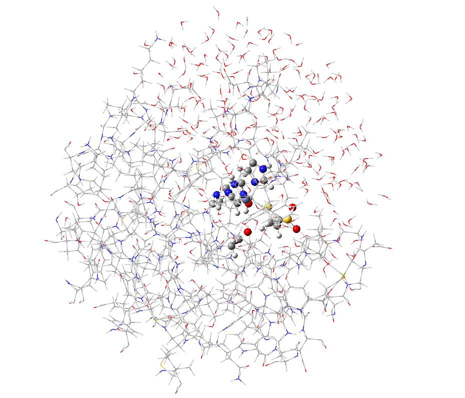
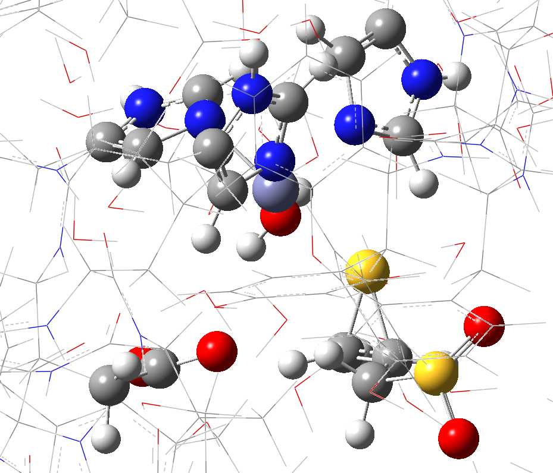
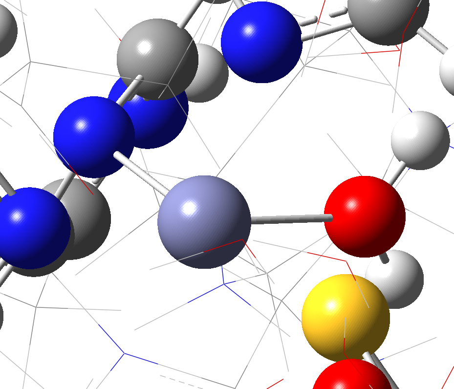
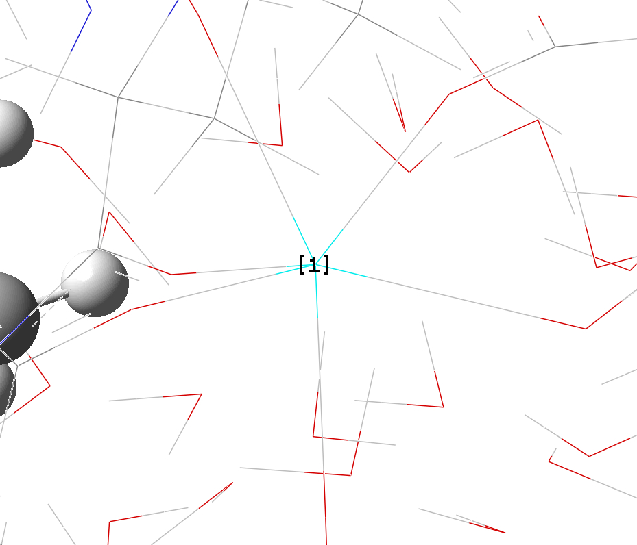
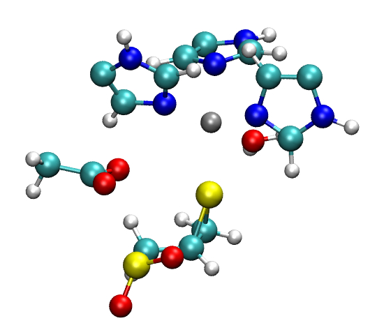
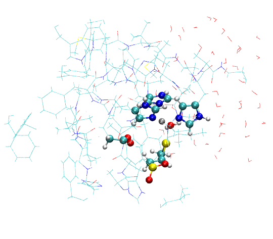

Introduction
This
tutorial is the supporting information for the article “A
Toolkit to
Assist ONIOM Calculations”
(TAO) by Peng Tao and H. Bernhard Schlegel. This
tutorial has been developed to
demonstrate the general procedure for a quantum mechanics / molecular
mechanics
(QM/MM) study of a biochemical system using Gaussian, GaussView
and the TAO
package. The example used in this tutorial is the inhibition mechanism
of
matrix metalloproteinase 2 (MMP2) by a selective inhibitor (4-phenoxyphenylsulfonyl)methylthiirane
(
This
tutorial is designed for users who are familiar with general use of
Gaussian,
GaussView and Unix/Linux, and who are planning to conduct QM/MM studies
of
biological systems using the ONIOM method available in the Gaussian
package. For
more details, please refer to the user manuals and information about
general usage
of Gaussian, GaussView and Unix/Linux system.
In this tutorial, we use the MMP2·
The structure of the MMP2·
Currently the TAO package is available and
tested for any Unix/Linux platform with PERL installed. It can also be
run on
either Windows or Mac with PERL installed. Users are advised to work
through
this tutorial under the Unix/Linux environment and use a text editor to
view
and modify the Gaussian ONIOM job files. The example used in this
tutorial came
from an actual research project. The sizes of the protein model and job
files
are not small. This could be cumbersome for beginners of Gaussian and
ONIOM. However,
the authors believe that using an example from a real study could help
users to
find the best way to conduct their own research, and shows the
usefulness and
effectiveness of the toolkit. Please note that all the calculations
shown in
this tutorial are for demonstration purposes only, and a low level of
theory is
chosen so that calculations are relatively fast. For publication
quality
calculations, users should consult related references for the
appropriate level
of theory for their own studies.
When using text files to run Gaussian
calculation on Unix/Linux, please make sure these files are in
Unix/Linux text
format (with line break
or end-of-line recognized by Unix/Linux
systems). Otherwise, these files
cannot be run properly on Unix/Linux platforms.
For any of the tools available from the TAO
package, typing the command by itself will display brief information
about that
command. Typing the command with the flag -h
or --help will display a detailed UNIX
style manual page for that command.
The user must have access to Gaussian and
GaussView. TAO is compatible with Gaussian (versions 03 and 09), and
GaussView (versions
3 to 5). Gaussian 09 is used to carry out calculations in this
tutorial. To
start this tutorial, the user needs to obtain a copy of TAO (available
from http://www.chem.wayne.edu/schlegel/Software.html), and install it on the system they are
using. Please refer to the installation guide of the TAO package.
In this tutorial, all the file names are in
italic, and command names and flags are in bold. Example command lines
are in
blue. The example command output and file contents are in smaller font
than
regular text.
ONIOM
input preparation
I.
Initial Gaussian job preparation
The user should copy the file mmp2_full_r.pdb
and corelist.txt into their working directory. These
two files and
other files which will be generated by the user following this tutorial
are
available from http://www.chem.wayne.edu/schlegel/Software.html.
The
program pdb2oniom was used to
generate a preliminary ONIOM input file from the PDB file mmp2_full_r.pdb. To
run this program, a file with a core
residue list is needed. In this case, the core residue list, corelist.txt,
reads:
[INH]
"339"
[ZN]
"335"
[HID]
"288"
[HID]
"292"
[HID]
"298"
[GLU]
"289"
Core
residues in this example include the inhibitor, the
active site zinc, three histidine residues and one glutamic acid
residue. Both
the residue name (in square bracket) and index number (in double
quotation
marks) are needed to identify each core residue. The following command
uses pdb2oniom to generate a preliminary
ONIOM input file with all residues containing any atom within 6 Å
from any atom
in the core residues allowed to move during optimization:
pdb2oniom
-o mmp2_full_r.gjf
-resid
corelist.txt -near
6 –i
mmp2_full_r.pdb
For the mmp2_full_r.pdb
input file, this command produces the following output.
Core
residues list file
corelist.txt provided.
All
residues within 6
angstroms from core region are free to move (0) during geometry
optimization.
Atom
type cannot be
assigned to atom H1 in residue
Partial
charge cannot
be assigned to atom H1 in residue
Element
type cannot be
decided for atom H1 in residue
Atom
type cannot be
assigned to atom H2 in residue
Partial
charge cannot
be assigned to atom H2 in residue
Element
type cannot be
decided for atom H2 in residue
Atom
type cannot be
assigned to atom H3 in residue
Partial
charge cannot
be assigned to atom H3 in residue
Element
type cannot be
decided for atom H3 in residue
Atom
type cannot be
assigned to atom OXT in residue PRO 334.
Partial
charge cannot
be assigned to atom OXT in residue PRO 334.
Element
type cannot be
decided for atom OXT in residue PRO 334.
Residue ZN does not exist in
database. Atom with
name ZN may not be defined.
Residue ZN does not exist in
database. Atom with
name ZN may not be defined.
Residue KA does not exist in
database. Atom with
name KA may not be defined.
Residue KA does not exist in
database. Atom with
name KA may not be defined.
There
are 1599 residues
in the PDB file.
Write
ONIOM input file
mmp2_full_r.gjf from PDB file.
Opening
file
mmp2_full_r.gjf for output ...
Successfully
wrote
mmp2_full_r.gjf file.
Two
files are generated: mmp2_full_r.gjf
and mmp2_ full_r.gjf.onb. mmp2_full_r.gjf
is a Gaussian input
file. The other file, mmp2_full_r.gjf.onb,
has both atom and residue information, and will be needed for later use
in the
production stage. Some atoms in residues Lys1 and Pro334 cannot be
processed
correctly, because these two residues are the N- and C-terminal
residues. The
names and atom types for the three hydrogens in the protonated
N-terminal amine
group in Lys1 and the oxygen in the unprotonated C-terminal carboxylate
group
in Pro334 cannot be assigned, and need to be fixed manually. Residue ZN
and KA
are zinc and calcium, respectively. The missing parameters need to be
added for
them as well. The correct parameters for these atoms are obtained from
the
related AMBER force field and are given in mmp2_full_r_02.gjf.
Please note that the partial charges for the other atoms in the
terminal
residues also need to be changed since charge distributions are
different for internal
and terminal residues.
The
inhibitor
The
Gaussian job file generated by pdb2oniom
does not contain a connectivity table. This table can be generated by
GaussView
by reading mmp2_full_r_02.gjf, and
saving to another Gaussian input file mmp2_full_r_03.gjf.
Since
the full system of MMP2 with water molecules is rather large (~8800
atoms), it
is convenient for structure manipulation to build a reduced size
(partial)
model for preliminary calculations. The partial system can be built
using any
software that users are comfortable with, such as VMD, PyMol, etc. The
program pdbcore can also be used to generate a
partial model system.
pdbcore
-o mmp2_partial_r.pdb
-resid
corelist.txt -near
12 -i mmp2_full_r.pdb
This
command generates partial model, mmp2_partial_r.pdb,
containing all the
residues within 12 Å of the core residues. Both the full model, mmp2_full_r.pdb,
and the partial model, mmp2_partial_r.pdb,
are illustrated in
Figure S1.
A Gaussian
ONIOM job file needs to be generated for the
partial model similarly to the full model.
pdb2oniom
-o mmp2_partial_r.gjf
-resid
corelist.txt -near
6 -i mmp2_partial_r.pdb
mmp2_partial_r.gjf
then needs to be modified for correct atom types and charges (mmp2_partial_r_02.gjf),
and the connectivity
table must be added using GaussView, (mmp2_partial_r_03.gjf).
If the core
residue file is not provided, no atoms in the
Gaussian input file will be marked as frozen for the optimization.
II. QM
region setup
The next
step is to use GaussView to set up the QM region in
both the partial model (mmp2_partial_r_04.gjf)
and the full size model (mmp2_full_r_04.gjf)
(Figure S2). Users can use Layer Selection Tool from GaussView (choose
Edit
-> Select Layer…) to set up desired QM region. Please refer
to GaussView
manual for more information.
a. b.
Figure S1. Model systems for the QM/MM tutorial. (a) full size model; (b) partial model.
 
c. d.
Figure S2. QM region for the full and partial model systems. (a) full model; (b) close up view of the QM region of the full model; (c) partial model; (d) close up view of the QM region of the partial model.
III. ONIOM
job files clean up
Before
running these Gaussian jobs, the connectivity of some
atoms need to be fixed (e.g. the bonds shown in GaussView, see Figure
S3). These
connections can be detected using checkconnect.
This program can help users to find atoms based on their numbers of
connections
in the connectivity table of a Gaussian input file. In most cases,
metal ions
are assigned multiple connections by GaussView. These connections need
to be
removed for proper behavior in the MM part of the ONIOM calculations.
This program
also detects all the isolated atoms as a sanity check.
 
a. b.
Figure S3. Connections which need to be removed for ONIOM calculations. (a) zinc ion in QM region (purple) with two connections; (b) a calcium ion (highlighted and labeled as [1]) with six connections.
Using checkconnect program to check the Gaussian input file of the partial model:
checkconnect -g mmp2_partial_r_04.gjf
–c 5
Part of the
output reads:
Opening
mmp2_partial_r_04.gjf for processing...
Treat
the file as a
Gaussian input file.
This
is an ONIOM input
file.
There
are 2493 atoms.
Atom
1605 (Zn) has 5
connections.
Atom
1606 (Ca) has 6
connections.
This
shows that atoms 1605 (zinc) and 1606 (calcium) have at least five
connections
(defined by flag –c 5) and need
to be fixed. The connectivity
of atom 1607 (calcium) also needs to be cleaned. The connectivity of
calcium
(1607) is 4, and can be displayed using flag -c 4. Since many carbons have
four connections, extra caution is needed to identify this. The
corrected input
file is saved to mmp2_partial_r_05.gjf.
A similar process is needed for the full model input file, mmp2_full_r_04.gjf,
with new input in mmp2_full_r_05.gjf.
To set up a
Gaussian ONIOM job, the user needs to assign the
net electric charge and spin multiplicity for each layer. The user can
use chargesum to quickly add up the MM
partial charges in each layer.
chargesum
-g mmp2_full_r_05.gjf
The output
reads:
Opening
mmp2_full_r_05.gjf for process
Given
file
mmp2_full_r_05.gjf is not Gaussian log file.
Treat
it as Gaussian
input file.
Total
charge of real
system is -11.721594.
Total
charge of high
layer is 0.355254.
Total
charge of medium
layer is 0.000000.
Total
charge of low
layer is -12.076848.
Total
charge of high
plus medium layer is 0.355254.
Dipole
moment (Debye) (X,
Y, Z) is
( -2484.0827,
-3100.5310, -2279.4550).
Total
Dipole moment
(Debye) is 4580.3793.
Since we
did not add counter ions to this protein, the total
charge of the whole protein is not zero. Due to the setup of the QM
region
(with covalent bonds across the QM/MM boundary), the total charge of
the QM
region is not an integer. The QM region should carry a net charge of
+1,
because the zinc ion has a +2 charge, and the glutamate side chain has
a –1
charge. The charge and spin multiplicity for the full protein model
ONIOM job
is
-11 1 1 1 1 1
The first
pair of numbers, –11 and 1, are the charge and
spin multiplicity for the low level of theory (MM in this case)
calculation of the
real system (including both QM and MM regions in this case). The second
pair of
numbers, 1 and 1, are the charge and spin multiplicity for high level
of theory
(QM) calculation of the model system (QM region in this case). The
third pair
of numbers, 1 and 1, are the charge and spin multiplicity for the low
level of
theory (MM) calculation of the model system (QM region). Please refer
to the
Gaussian manual for more detailed information.
For the
partial model system, we have
-3 1 1 1 1 1
For the
next step, the command line for each ONIOM job needs
to be changed to the following:
#p
oniom(pm3:amber=hardfirst) nosymm geom=connectivity
iop(2/15=3) test opt=quadmac
The PM3
semi-empirical level of theory is used for the QM
region to reduce the computational time in this tutorial. Users should
use a
more suitable level of theory for their research. Memory and number of
CPUs also
need to be changed to values appropriate for the level of theory. Please refer the Gaussian manual for details
of the job setup. The checkpoint file name should be modified as well. mmp2_partial_r_06.gjf
was used for the
Gaussian run.
From this
point forward, we will use the partial model
system to carry out the calculations. Once we have identified the key
structures, (e.g. reactant, transition state (TS), product etc.) we can
construct
inputs for the full systems using the partial models.
IV. Missing
parameters lookup
The
Gaussian job mmp2_partial_r_06.gjf
fails
with a complaint about missing parameters in the log file mmp2_partial_r_06.log:
Read
MM parameter file:
Define ZN
1
Define C0
2
Include all MM classes
Bondstretch undefined between atoms
1617
1618 S-O [H,H] *
Bondstretch undefined between atoms
1617
1619 S-O [H,H] *
Bondstretch undefined between atoms
1617
1620 S-CA [H,L]
…
…
Angle bend
undefined between atoms
1630 1631
1632 OS-CA-CA [L,L,L]
Angle bend
undefined between atoms
1630 1631
1640 OS-CA-CA [L,L,L]
* These undefined terms cancel in the ONIOM
expression.
MM function not complete
Error termination via Lnk1e in
XXXXXXXXXXXXXX/g09/l101.exe
at XXXXXXXXXXXXXX 2009.
Job cpu time:
0 days 0 hours
0 minutes
1.8 seconds.
File lengths (MBytes): RWF=
5 Int= 0
D2E= 0 Chk= 1 Scr=
1
This error
message tells us that the MM parameters for zinc
and calcium and numerous other MM parameters are missing from the input
file.
These parameters can be found in the AMBER force field file and need to
be
added at the end of the Gaussian input file. The parameters for zinc
and
calcium are
VDW Zn
1.10 0.0125
VDW C0
1.7131 0.459789
The
parmlookup program can be used to
look up these missing parameters from AMBER force field files.
parmlookup
-g mmp2_partial_r_06.log
-o mmp2_partial_r_06_parm.txt
The missing
parameters are listed in the output file, mmp2_partial_r_06_parm.txt,
in the
format used by Gaussian.
Hrmstr1 S
O 194.8000
1.8020
Hrmstr1 S
CA 277.9000
1.7390
Hrmstr1 S
HS 286.4000
1.3530
Hrmstr1 CA
OS 372.4000
1.3730
HrmBnd1
HrmBnd1 CT
HrmBnd1
HrmBnd1 O
S O
0.0000
0.0000
HrmBnd1 O
HrmBnd1 O
S HS
0.0000
0.0000
HrmBnd1 CA
CA OS
69.8000
119.2000
HrmBnd1 CA
OS CA
63.6000
118.9600
Some
of the parameters cannot be found by parmlookup
in the AMBER force field and are set to zero in the output. Values for
these
missing parameters can be estimated by looking up the corresponding
parameters
for similar atom types. This process may need to be repeated several
times
until all the parameters are provided.
The
user may also encounter the following error message (shown in mmp2_partial_r_06_02.log)
The
combination of
multiplicity 1 and 3505 electrons is
impossible.
Error
termination via
Lnk1e in XXXXXXXXXXXXXX/g09/l101.exe at XXXXXXXXXXXXXX 2009.
Job cpu time:
0 days 0 hours
0 minutes
2.1 seconds.
File lengths (MBytes): RWF=
52 Int= 0
D2E= 0 Chk= 1 Scr=
1
This is
because a total charge of –3 is assigned to the
whole system, but this does not correspond to a closed shell
configuration. The
user needs to adjust them to appropriate values. After using chargesum to check total charges, a
charge of –2 and a multiplicity of 1 are used. Following this
correction, still
one more round of parameter look up is needed. The final working
Gaussian job
file is mmp2_partial_r_07.gjf.
ONIOM
Job Monitoring
Actively
monitoring running ONIOM jobs can
save a tremendous amount of time and computational resources. Program oniomlog was developed for this
purpose.
I. Check
energies
When
an ONIOM geometry optimization job is running, this program can be used
to
check its progress. mmp2_partial_r_07_part.log
is an unfinished geometry optimization log file. The following command
produces
a summary of the energies in the log file.
oniomlog
-o -i mmp2_partial_r_07_part.log
The
output of this command reads:
Gaussian out file is
mmp2_partial_r_07_part.log
Optimization -o was used
Final ONIOM energy report
for a
two-layer ONIOM calculation (hartree):
This corresponds to the last complete step of an unfinished
geometry
optimization job.
High Level Model:
0.117316
Low
Level Model:
-0.099033
Low
Level Real :
-7.941107
Low
Level Real-Model :
-7.842074
ONIOM Energy :
-7.724758
Dipole moment (Debye) (X,
Y, Z) is
(
-272.4224, -431.8687, -519.2448).
Total Dipole moment
(Debye) is 728.2443.
Attention: this Gaussian
calculation
did not terminate normally!
OPT flag -o was turned on.
Energy of
each step will be printed.
Energies along the
optimization path
(kcal/mol):
Step Number
ONIOM
High Model
Low (Real-Model)
1
139.704978
95.029033
44.675945
2
61.415425
70.264397
-8.848971
3
44.086133
50.729131
-6.642998
4
29.244689
33.199647
-3.954959
5
19.479058
21.517017
-2.037959
6
10.567483
11.196136
-0.628653
7
4.583601
4.318795
0.264807
8
0.000000
0.000000
0.000000
There are 8 steps of
optimization in
this job.
The
ONIOM energy of the final step is displayed in hartree. The geometry
optimization path is displayed at the end, because the flag -o
is used. It shows that seven steps
of the optimization were finished so far, because the step 1 is the
initial
structure. The ONIOM energy, QM region energy (high model) and
contribution
from the MM calculation, MMreal-MMmodel
(Low(real–model))
are displayed in kcal/mol with the last step as reference. If the flag -ha is specified, all the energies are
printed as total energies in hartree rather than relative energies in
kcal/mol.
From the energies, it is clear that the calculation is stepping toward
a
minimum.
II. Check
geometries
This
program can also extract certain parts of the structure along the
optimization
path for a quick check.
oniomlog
-s mmp2_partial_r_07_partqm.xyz -o -i
mmp2_partial_r_07_part.log
The QM
region is extracted along the optimization path with
flag -o, and saved to the file mmp2_partial_r_07_partqm.xyz
in XYZ
format. If flag -o is not given, only
the last geometry will be saved.
oniomlog
-s mmp2_partial_r_07_partqmmov.xyz
-g
-l 1
-o -i
mmp2_partial_r_07_part.log
The QM
region and all of the moving part of system are
extracted along the optimization path with flag -g -l 1 -o, and saved to mmp2_partial_r_07_partqmmov.xyz.
mmp2_partial_r_07_partqm.xyz and mmp2_partial_r_07_partqmmov.xyz are relatively small, and can be loaded into visualization software, such as VMD for quick viewing (Figure S4). Flags -l, -g and their combinations can be used to extract structures from ONIOM calculations in many different ways. Please refer to the manual page of oniomlog for more details. With these files, the user can quickly check the progress of a Gaussian ONIOM optimization job.
 a. b.
Figure S4. Structures extracted by oniomlog. a) QM region only; b) QM region and all the atoms that move during the optimization.
III.
Generate new input files
If the user
needs to create a new Gaussian ONIOM job with
the optimized geometry from a previous ONIOM job, this can also be done
using oniomlog.
oniomlog
-oi -t
mmp2_partial_r_07.gjf -fo mmp2_partial_r_08.gjf
-i
mmp2_partial_r_07_part.log
The flag -oi
tells the program that a new Gaussian ONIOM input file needs to be
generated. The
program uses mmp2_partial_r_07.gjf as
a template (after flag -t), and
extracts the last geometry from mmp2_partial_r_07_part.log
(after flag -i) and generates a new
Gaussian ONIOM input file mmp2_partial_r_08.gjf
(after flag -fo). The flag -fn number
can be used to generate a new input file from a specific geometry along
the
optimization path instead of the last geometry (number
is the step number of the desired geometry along the
optimization path). Finding an appropriate level of theory and getting
the geometry
optimization converged to the appropriate state may involve many rounds
of
calculations, and is beyond the scope of this tutorial. With the help
of this
toolkit, these calculations can be conducted conveniently and
efficiently.
Another
important task in studying a reaction is finding the
transition state (TS). After obtaining an optimized reactant structure,
the user
can modify this structure toward a targeted TS, by conducting a series
of geometry
optimizations with key geometric parameters fixed (mmp2_partial_TS_01.gjf).
These fixed geometric parameters are
usually related to the breaking and forming of chemical bonds. For
example, in mmp2_partial_TS_01.gjf, two bond lengths
and one bond angle are fixed. The user will find that it is much easier
to
manipulate the partial model system than the full size model system.
Once the
partially optimized geometry is close enough to the desired TS, it can
be used
in a TS optimization. There are many
ways to search for a TS (please
refer to Hratchian, H. P.; Schlegel, H. B.; “Finding
Minima, Transition
States, and Following Reaction Pathways on Ab Initio Potential Energy
Surfaces”, in Theory and Applications of Computational
Chemistry: The First
40 Years, Elsevier, 2005, pg 195-259;
Jensen, F, (1999), Introduction
to Computational Chemistry, Wiley; Wales, D. (2004), Energy Landscapes:
Applications to Clusters, Biomolecules and Glasses, Cambridge University Press).
This topic is beyond the scope of this tutorial.
Sometimes,
it will take a rather long time to finish an
ONIOM geometry optimization job. In some cases, a geometry optimization
job does
not converge. For example an optimization may cycle between two very
close
geometries after many optimization steps, and total energy oscillates
within a
very narrow range before the number of allowed optimization steps is
exceeded. oniomlog is particularly useful in this
case. Long before the Gaussian ONIOM job exits with an error message,
the user
can see if the optimization is stuck. When this happens, oniomlog
can be used to check the geometries along the optimization
and to generate a new Gaussian ONIOM input file with the necessary
changes for
another optimization job (for example, using a different level of
theory, changing
the maximum step size allowed in geometry optimization, etc.). All of
these can
be done using oniomlog while the
current job is still running. To save time and computational cost,
users are
encouraged to actively monitor ONIOM optimization jobs.
In the
present case, the geometry optimization job needed to
be restarted several times before convergence was achieved. The final
geometry
optimization log file is mmp2_partial_r_08_final.log.
An ONIOM input file mmp2_partial_r_08_final_geom.gjf
is generated containing the optimized geometry from mmp2_partial_r_08_final.log
using oniomlog.
oniomlog
-oi -t
mmp2_partial_r_07.gjf -fo mmp2_partial_r_08_final_geom.gjf
-i
mmp2_partial_r_08_final.log
To save
time and computational cost, it is recommended that
users do not wait until the jobs in this tutorial complete before
proceeding.
Using a Gaussian log file with several iterations of geometry
optimization or
the Gaussian log file provided in this tutorial is sufficient for the
rest of
the tutorial.
IV. Reset
optimization flag
If a user
wants to reset the optimization
flags of an ONIOM job, for example, to set all the residues within 7
Å instead
of 6 Å from core region allowed to move during optimization, setmvflg can do this easily. An
example of this program is
setmvflg -b -i mmp2_partial_r_07.gjf -onb
mmp2_partial_r.gjf.onb -resid
corelist.txt -near
7 -o
mmp2_partial_r_07_newflg.gjf
setmvflg
needs an ONIOM input file, mmp2_partial_r_07.gjf,
the ONB file, mmp2_partial_r.gjf.onb,
produced by pdb2oniom when the ONIOM
input file was generated from the PDB file, and a core residue list
file, corelist.txt.
This command resets the
optimization flags in mmp2_partial_r_07.gjf.
All the residues within 7 Å of the core region will be allowed to
move during the
geometry optimization in mmp2_partial_r_07_newflg.gjf.
The command
line listed above generates the
following output.
Use coordinates from file
mmp2_partial_r.gjf.onb to reset optimization flag.
Reading ONIOM input file
mmp2_partial_r_07.gjf...
There are 2493 atoms in
file
mmp2_partial_r_07.gjf.
Done!
Reading ONIOM ONB file
mmp2_partial_r.gjf.onb...
There are 2493 atoms in
file
mmp2_partial_r.gjf.onb.
There are 393 residues in
file
mmp2_partial_r.gjf.onb.
Done!
Output file name is
mmp2_partial_r_07_newflg.gjf
In file
mmp2_partial_r_07.gjf, there
are 784 atoms, 89 residues subject to geometry optimization.
After reset, there are
1124 atoms,
132 residues subject to geometry optimization.
Open
mmp2_partial_r_07_newflg.gjf to
write new ONIOM input file...
Successfully wrote
mmp2_partial_r_07_newflg.gjf file.
The output
shows that 132 residues (1124 atoms) are allowed
to move in mmp2_partial_r_07_newflg.gjf,
compared to 89 residues (784 atoms) in mmp2_partial_r_07.gjf.
Flag ‑b tells setmvflg to use the
coordinates from the ONB file to reset the optimization
flags. Without this flag, setmvflg
will use coordinates from the Gaussian input file to reset the
optimization
flags. In either case, the newly generated input file always has the
same
coordinates as the given input file.
ONIOM
Production Calculations
After
obtaining appropriate structures in a reaction sequence using a partial
model
system, these structures (reactant, TS, product, etc.) need to be
re-optimized
using the full protein model. transgeom
was developed for this purpose. This program needs an input file:
transgeom
mmp2transgeom.in
Note
that no flag is required before the input file, which must be the last
item in
the command line. The input file mmp2transgeom.in
reads
Modelgjf
mmp2_partial_r_08_final_geom.gjf
Modelonb
mmp2_partial_r.gjf.onb
Productiongjf
mmp2_full_r_05.gjf
Productiononb
mmp2_full_r.gjf.onb
Productioninput mmp2_full_r_06.gjf
Four
input files are needed and one file will be generated. mmp2_partial_r_08_final_geom.gjf
(“Modelgjf”) is the Gaussian ONIOM
input file for the partial model system. mmp2_partial_r.gjf.onb
(“Modelonb”) was produced by pdb2oniom
when the ONIOM input file for the partial model system was generated
from the
PDB file. mmp2_full_r_05.gjf
(“Productiongjf”)
is the Gaussian ONIOM input file for the full protein model with
solvent
molecules prepared earlier in this tutorial. mmp2_full_r.gjf.onb
(“Productiononb”) was generated by pdb2oniom
when generating the ONIOM
input file of the full model system from the PDB file. mmp2_full_r_06.gjf
(“Productioninput”) is the Gaussian ONIOM input
for the full system with the optimized geometry from mmp2_partial_r_08_final_geom.gjf.
After
generating the Gaussian ONIOM input file for the full
system, the user needs to copy the added MM parameters in the partial
model
input file to the full model input file, and make necessary adjustment
to the
full model input file similar to those for the partial model input file
(e.g. charge
and multiplicity, etc.). Users are also encouraged to check the
completeness
and validity of the input file for the full model production run. File mmp2_full_r_06.gjf
is a valid Gaussian
ONIOM job for the full system. The converged geometry optimization log
file of the
full size model is mmp2_full_r_06_final.log.
By default,
program transgeom
takes the atom, atom type, partial charge, moving flag (0 or -1), layer
setup
(H, M or L), and coordinate information for those atoms included in the
partial
model system if they are different from the given full model input
file. In
this way, any changes made in the partial model will automatically be
carried through
to the new full model input file. If for any reason a user chooses to
keep any
of the information from the full model input file, several flags (‑atmp, ‑chgp, ‑movep, ‑layerp, ‑coordp) can be used to keep
any of these values from the full
model input file. Please refer to the
transgeom manual page for more
details.
In some
cases, users may want to take the geometry from a
full size model and build a partial model. For example, when full
frequency
analysis is computationally prohibitive for the full size model, but
such an
analysis can be afforded for a partial model. By simply setting the
full size model
as “Model” and the partial model as
“Production” in the input file, transgeom
will extract the
corresponding portion of the geometry from the full size model and
build a
partial model. All other options of transgeom
apply as well.
II.
Fit partial charges for new structures
For
different structures in a reaction sequence, it is
obvious that the MM partial charges of the atoms in the QM region
change and
need to be refitted. oniomresp was
developed for this purpose.
The
partial charge refitting procedure used in this tutorial can be
described as follows. After finishing the geometry optimization using
the full
model, the QM region with capping atoms (usually hydrogen) is extracted
from
the log file. The extracted structure is subject to a single point QM
calculation using the Merz-Singh-Kollman scheme for electrostatic
potential derived charges. The QM single point
calculation results are used in the Restrained Electrostatic Potential
(RESP)
charge fitting program. The fitted partial charges replace the previous
set of
partial charges for QM atoms in a new Gaussian ONIOM input file. The
geometry
optimization is repeated with newly fitted partial charges for QM
atoms. This
whole procedure can be repeated until convergence. Please refer to Biochemistry
2009, 48, 9839-9847 for details of
this procedure. The refitting of
charges is particularly important for the mechanical embedding scheme
in ONIOM
calculations since the electrostatic interactions between the QM region
and the
rest of the system are handled at the MM level. oniomresp
has three modes for charge fitting.
In mode 1,
the QM region with capping atoms is extracted
from a Gaussian ONIOM log file and saved to a Gaussian input file.
oniomresp
-m1 -g mmp2_full_r_06_final.log
-o
mmp2_full_r_06_final_4ESP.gjf
File mmp2_full_r_06_final.log
is the converged log file for the full size model, and mmp2_full_r_06_final_4ESP.gjf
contains the extracted structure.
Users are recommended to visually check the extracted structure using
GaussView. With an appropriate level of theory and a suitable
population
analysis scheme, a single point calculation is carried out using mmp2_full_r_06_final_4ESP.gjf. Note
that geometry optimization should not be
conducted for this extracted structure, since it is not a minimum as a
stand-alone
structure. By default, oniomresp
only extracts the QM region with capping atoms. When an atom list file
is given
with the flag -list, oniomresp can
extract the corresponding
atoms from the ONIOM log file and write them to a Gaussian input file.
Please
refer to the oniomresp manual page for
more details of this option.
The log
file, mmp2_full_r_06_final_4ESP.log,
generated from a QM single point calculation using mmp2_full_r_06_final_4ESP.gjf used for mode 2
of program oniomresp.
oniomresp
-m2 -#
5 -g mmp2_full_r_06_final_4ESP.log
-o
mmp2_full_r_06_final_4ESP_RESP.in
Flag
-# 5 tells oniomresp
there
are 5 capping atoms. Zero charge constraints are added to these capping
atoms
in the RESP input file, mmp2_full_r_06_final_4ESP_RESP.in.
Before using resp, from the AMBER
program package, to do the charge fitting, the electrostatic potential
needs to
be extracted from mmp2_full_r_06_final_4ESP.log.
espgen, another program from the
AMBER program package, can be used for this purpose. The extracted
electrostatic
potential is saved to mmp2_full_r_06_final_4ESP.esp.
espgen
-i mmp2_full_r_06_final_4ESP.log -o
mmp2_full_r_06_final_4ESP.esp
resp
can perform the charge fitting using files generated above.
resp
-i mmp2_full_r_06_final_4ESP_RESP.in
-o mmp2_full_r_06_final_4ESP_RESP.out -p mmp2_full_r_06_final_4ESP_RESP.pch
-t mmp2_full_r_06_final_4ESP_RESP.qout -e mmp2_full_r_06_final_4ESP.esp
mmp2_full_r_06_final_4ESP_RESP.qout
contains the fitted partial charges for the QM atoms. The last five
(capping) atoms
have zero partial charges because of the constraints added in mmp2_full_r_06_final_4ESP_RESP.in.
Please refer to the AMBER user manual for more details of resp
usage. The qout file
with the fitted charges reads:
0.536331 -0.581191 0.447401 0.011234
0.246270 0.020309 -0.742044 0.488682
-0.004958
0.014470 0.028681
0.763294 -0.902114 -0.792329 0.594623
-0.724348
0.506225 0.129609
0.174016
0.001224 -0.604498 0.328291 0.627675 -0.754995
0.492897 0.358836
0.132775 -0.151578 -0.646392 0.291544
0.429922 -0.023872
0.268593 0.096902 -0.283048 0.096459
0.164431 -0.522630 0.325696 0.190850
1.325617 -0.668203 -0.647399 -0.724312
0.314251 0.366800
0.000000
0.000000
0.000000 0.000000
0.000000
Both espgen and resp are available free of
charge from
the AMBER website (http://ambermd.org/).
Since mmp2_full_r_06_final.log
is a geometry optimization log file, a new ONIOM input file needs to be
generated containing the new geometry. This can be done using oniomlog.
oniomlog -oi -t
mmp2_full_r_06.gjf
-fo
mmp2_full_r_06_final_geom_oldchg.gjf -i mmp2_full_r_06_final.log
The
new partial charges can be added to the ONIOM input file, mmp2_full_r_06_final_geom_oldchg.gjf,
used in mode 3 of oniomresp, where the resp charge
file, mmp2_full_r_06_final_4ESP_RESP.qout, is
needed.
oniomresp -m3 -g
mmp2_full_r_06_final_geom_oldchg.gjf -qin mmp2_full_r_06_final_4ESP_RESP.qout
-o
mmp2_full_r_07.gjf -c mmp2_full_r_06_07_chgcomp.txt
mmp2_full_r_07.gjf
is an ONIOM input file with refitted partial charges. mmp2_full_r_06_07_chgcomp.txt
lists the old and new sets of partial
charges and atom information for the user’s reference.
Users are
not limited to RESP charges in
their studies. Partial charges from any type of population analysis can
be used
when appropriate. extractcharge can
extract designated partial charges and save them to a file which can be
used by
oniomresp in mode 3. Other type of
partial charges can be used conveniently when there is no covalent bond
across
the QM/MM interface since no capping atoms are needed.
extractcharge
-c1 -g mmp2_full_r_06_final_4ESP.log -o mulcharge.txt
In this
example, Mulliken charges are
extracted from file mmp2_full_r_06_final_4ESP.log
and saved to mulcharge.txt.
By default,
oniomresp assigns partial charges from a given charge
file to QM
atoms in sequence. When a map file is given by flag -p,
oniomresp assigns
partial charges to those atoms listed in the map file. Please refer to
the oniomresp
manual page for more details of this option. Flags -list
and ‑p are useful
when partial charges of a particular part of the ONIOM system other
than QM
region need to be refitted.
ONIOM
Results Analysis
I.
Generating a PDB file from
an ONIOM file
The results
of production calculations usually require
further analysis. For biological system, it is convenient to analyze
the
structures in PDB format using visualization software like VMD, UCSF
Chimera,
PyMol, etc.. oniom2pdb can generate
a PDB file from Gaussian ONIOM file using a template PDB file. Either a
log
file or an input file can be used to generate the PDB file. Two
examples of
using oniom2pdb are
oniom2pdb
-g mmp2_full_r_06_final.log
-pdb
mmp2_full_r.pdb -o
mmp2_full_r_06_final_log.pdb
oniom2pdb
-g mmp2_full_r_06.gjf
-pdb
mmp2_full_r.pdb -o
mmp2_full_r_06_gjf.pdb
In
these two examples, the PDB file, mmp2_full_r.pdb,
used when generating ONIOM input file in the preparation stage is the
template
file. When an optimization job log file is specified, the flag -n number
can be used to choose a particular geometry along the optimization path
to
generate the PDB file.
II.
Assigning coordinates from
a PDB file to an ONIOM file
Many users
may find that it is easier to manipulate the
geometry of biomolecules in PDB format than in other formats. pdbcrd2oniom can generate a new ONIOM
input file with coordinates from a given PDB file.
pdbcrd2oniom
-g mmp2_full_r_06.gjf
-pdb
mmp2_full_r.pdb -o
mmp2_full_r_06_pdb.gjf
pdbcrd2oniom
needs a Gaussian ONIOM input file, e.g. mmp2_full_r_06.gjf,
and a PDB file, e.g. mmp2_full_r.pdb.
These two files should have exactly the same number and types of atoms
and in
the exactly same order. pdbcrd2oniom
then takes coordinates
from the PDB file and replaces the coordinates in the Gaussian ONIOM
input file
and saves to mmp2_full_r_06_pdb.gjf. pdbcrd2oniom
is very different from pdb2oniom, which reads a PDB
file,
assigns an AMBER force field atom type and partial charge to each atom,
and
creates a new Gaussian ONIOM input file. pdbcrd2oniom,
on the other hand, reads a PDB file and a Gaussian ONIOM input file,
takes coordinates
ONLY from the PDB file and replaces coordinates ONLY in the Gaussian
ONIOM
input file.
Using both pdbcrd2oniom and oniom2pdb,
users can easily create a PDB file with the optimized geometry from a
Gaussian
ONIOM file using oniom2pdb, make
some changes to the structure in a PDB file using their favorite tools
(to
create TS or product, etc.), and then create a new ONIOM input file
with
modified coordinates using pdbcrd2oniom.
Please keep
in mind that PDB files only
keeps three decimal places per coordinate value. This is less than
those in
ONIOM job files (6 decimal places).
III.
Extract Energetic
Information
When
comparing energies of different structures in a
reaction sequence, gaussiantable can
automatically extract the ONIOM energy and its components from a series
of files
and list them as both absolute and relative values. One example of
running this
program reads
gaussiantable
-i gaussiantable.in
-o gaussiantable.out
Two
Gaussian ONIOM log files, 01_3_R_Th.log
and 02_3_TS_Th.log,
are given in gaussiantable.in:
# Example input file for
gaussiantable
#
<Label>Example</Label>
<ONIOM>
01_3_R_Th.log
02_3_TS_Th.log
</ONIOM>
All blank
lines and comment lines starting
with # are ignored. The list of log files is organized in the block
defined by
the <ONIOM> and </ONIOM>
lines. The keyword ONIOM tells the program the
following are
ONIOM log files. The keyword GAUSSIAN
will be used for regular Gaussian log files in future development. Two
files
are listed in this example. An arbitrary number of log files can be
listed in the
block. The first file (usually the reactant structure in a reaction
sequence)
will be used as the reference values for the relative energies. Each
input file
can have an arbitrary number of blocks.
The output
file gaussiantable.out contains the ONIOM energy
information.
=================================================
Output for block 1: Example
Absolute values in Hartee:
ONIOM Total
Model High
Model Low
Real Low
Real-Model Low
01_3_R_Th.log
-3861.352671
-3827.772029
-0.250204
-33.830845
-33.580642
02_3_TS_Th.log
-3861.312040
-3827.731645
-0.091761
-33.672155
-33.580395
-------------------------------------------------
Relative values in
kcal/mol:
ONIOM Total
Model High
Model Low
Real Low
Real-Model Low
01_3_R_Th.log
0.000000
0.000000
0.000000
0.000000
0.000000
02_3_TS_Th.log
25.496088
25.340972
99.424437
99.579553
0.155116
=================================================
The first
half has ONIOM energies, and each component is
listed in its absolute value in hatree. The second half has these
energies
listed in relative values in kcal/mol with respect to the first log
file listed
in this block. If multiple blocks are given in the input file, the
output
blocks are listed in the same format and same order as the blocks
listed in the
input file.
With this
program, the final energies from QM/MM study can
be easily extracted, analyzed and compared.
Summary
This tutorial describes a general procedure for a QM/MM study of a biochemical system using Gaussian and GaussView with the help of the PERL toolkit TAO. This tutorial is designed for users with some basic experience with Gaussian, GaussView and Unix/Linux systems. The TAO toolkit is distributed free of charge from http://www.chem.wayne.edu/schlegel/Software.html.